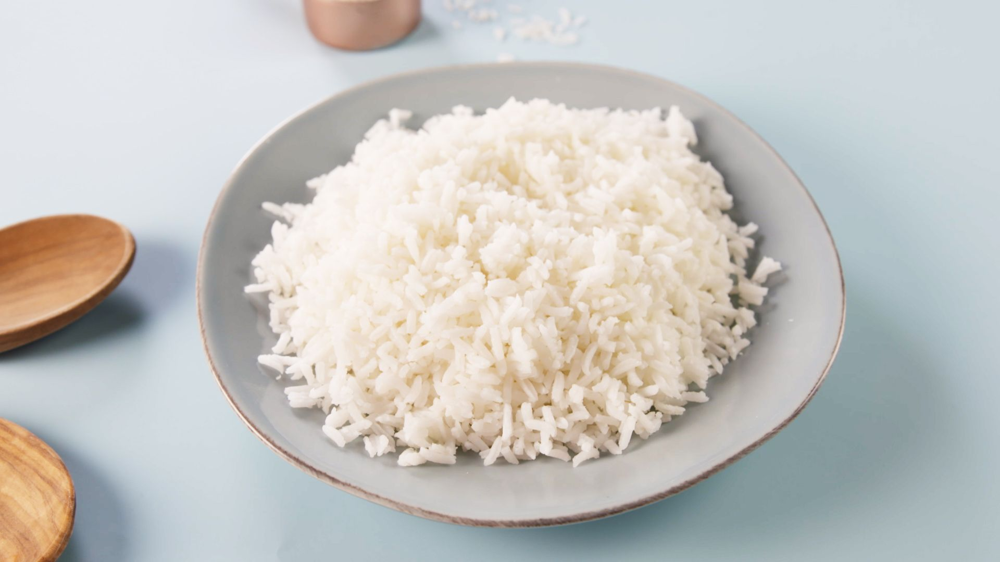

rice

How to make rice
Rice is a very easy and simple recipe that everyone should know. Most people do not know how to properly make rice without a rice cooker and ewven then they may not do it properly.
Ingredients
Recipe
- Clean rice three times
- Measure water to double the height of the rice in the pot. Easily done by sticking your finger down to the bottom of the pot and using your thumb as a mark.
- Place on high heat
- Once water reaches a fast boil, reduce heat to low/simmer
- Place a lid on top and let it cook for another 15-20 minutes
- Fluff rice with fork and serve once cooled